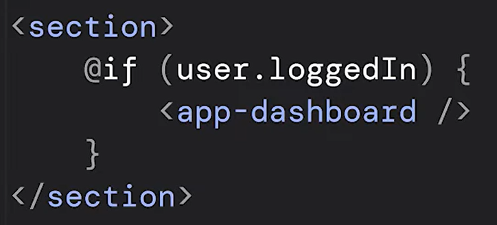
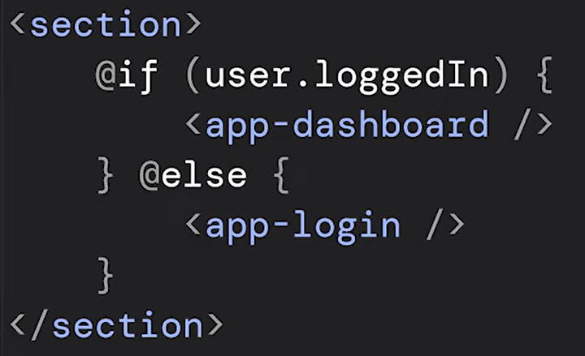
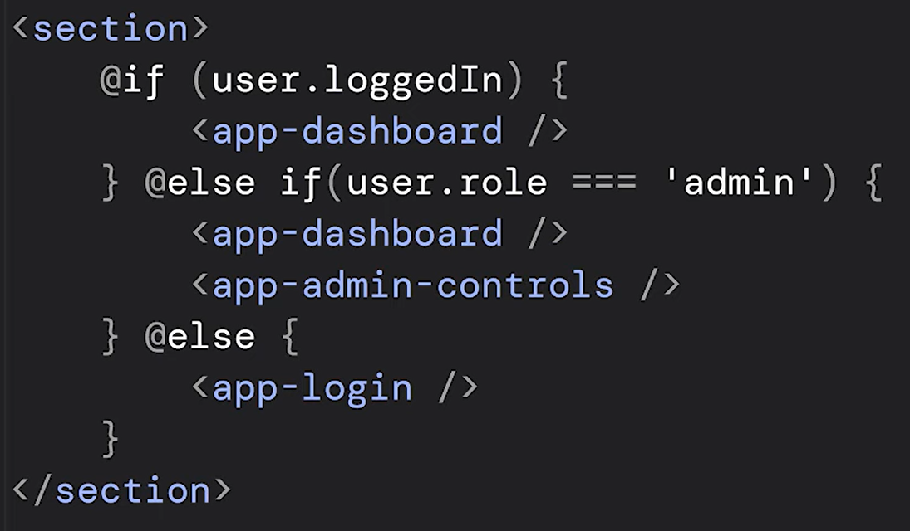
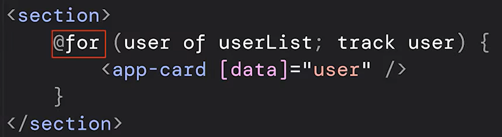
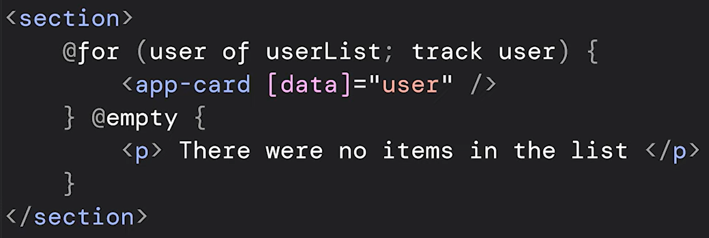
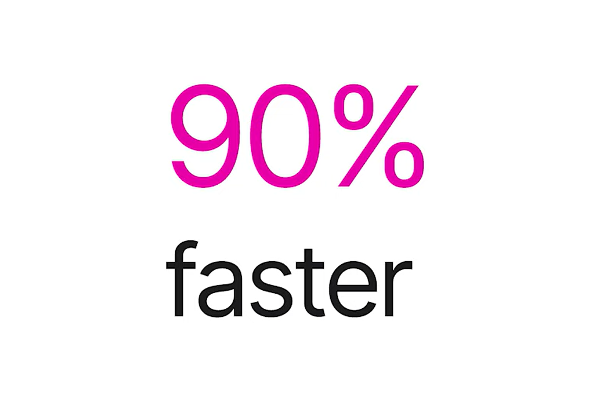
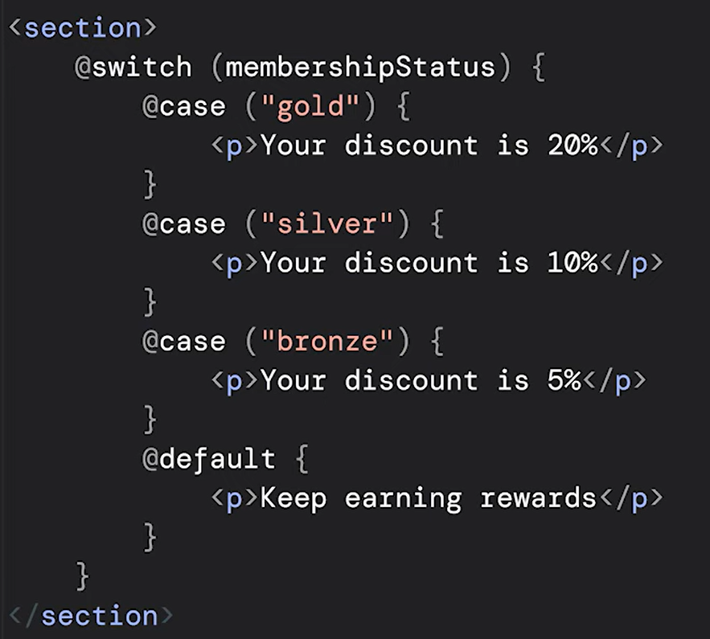

@if
Replaces *ngIf

The syntax of the control flow:
- The "@" tells Angular this this is a control flow statement.
- The keyword "if" looks a lot like a JavaScript if statement, which should be more familiar with
developers.
- The condition in parentheses.
- The opening and closing braces, which make it easier to group multiple elements without the need of
ng container.
Compared to the *ngIf based syntax, the new syntax is clearer, more robust, and
easier to reason about.
There is also support for "else" without the need of ng templates and
variables.

Also support for "else if" syntax.

@for
Replaces *ngFor

The @for looks very similar to a TypeScript for loop. There are maintaining similar syntax for
our iterables.
The new @for, add an important performance change!
Track is now required.
This will help our loops be faster and more efficient. To make this easier, track now lets us to
specify an expression directly. No more track by functions.
We can also specify a fallback when there are no items in the list with the new @empty
syntax.

Advantages:
- Clean code, readable code
- Optimization of implementation considerably.
- @for is up to 90% faster when processing certain list updates.

@switch
Replaces *ngSwitch
You can use the new @switch syntax to write clear and robust switch statements directly in your
templates.

With similar syntax as if and for, you specify the expression, then use @case syntax to specify
the clauses.
And just like switch statements in JavaSript, we can use the @default keyword for your default
case